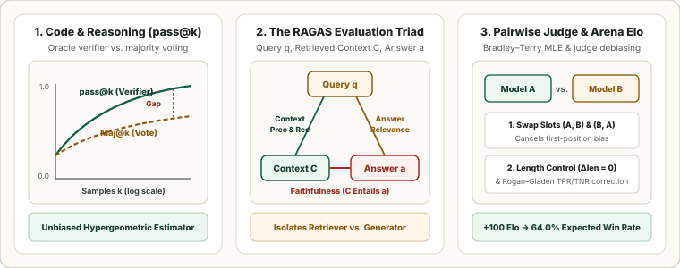

Modern LLM, RAG, Code & Judge Metrics: Unbiased $\text{pass}@k$, $\text{Maj}@k$, the RAGAS Triad, FActScore, and Judge Debiasing
Open-ended reasoning, code synthesis, Retrieval-Augmented Generation (RAG), and instruction following cannot be evaluated with surface $n$-gram overlap alone. This final chapter derives the unbiased hypergeometric $\operatorname{pass}@k$ estimator, compares it against test-time majority voting ($\operatorname{Maj}@k$), formalizes the RAGAS Triad and atomic FActScore, and derives pairwise Bradley–Terry Elo, Length-Controlled Win Rate, and Rogan–Gladen calibration for imperfect LLM judges.

1. Code & Verifiable Reasoning: Unbiased $\text{pass}@k$ vs. $\text{Maj}@k$
In code synthesis (HumanEval, SWE-bench) and verifiable math (MATH, AIME), an LLM samples $n \ge k$ candidate solutions and a unit-test suite identifies $c \in \{0, \dots, n\}$ passing solutions. Plugging the empirical pass rate $\hat p = c/n$ into the binomial formula $1 - (1 - \hat p)^k$ is downward biased at finite $n$ because $f(p) = 1 - (1-p)^k$ is strictly concave for $k \ge 2$ (Jensen's inequality). The exact minimum-variance unbiased estimator (MVUE) is the hypergeometric probability that a size-$k$ subset drawn from $n$ contains at least one of the $c$ passing samples (Chen et al., 2021):
While $\operatorname{pass}@k$ requires an oracle verifier at test time to pick the winning candidate, Self-Consistency ($\operatorname{Maj}@k$) takes the majority vote over extracted final answers $\hat a_{\text{Maj}@k} = \arg\max_a \sum_{j=1}^k \mathbf{1}[a(y_j) = a]$. The gap $\operatorname{pass}@k - \operatorname{Maj}@k$ measures latent reasoning capability that has not yet concentrated into the mode of the model's distribution.
Worked $\operatorname{pass}@k$ Comparison ($n = 10$ samples, $c = 2$ passing):
| Budget $k$ | Unbiased Hypergeometric Formula | Unbiased $\widehat{\operatorname{pass}@k}$ | Biased Plug-in $1 - (1 - 0.2)^k$ | Finite-Sample Bias |
|---|---|---|---|---|
| $k = 1$ | $1 - \frac{8}{10}$ | $\mathbf{0.2000}$ | $0.2000$ | $0.0\%$ |
| $k = 2$ | $1 - \frac{8 \times 7}{10 \times 9} = 1 - \frac{56}{90}$ | $\mathbf{0.3778}$ | $1 - 0.8^2 = 0.3600$ | $-1.78\%$ |
| $k = 5$ | $1 - \frac{\binom{8}{5}}{\binom{10}{5}} = 1 - \frac{56}{252}$ | $\mathbf{0.7778}$ | $1 - 0.8^5 = 0.6723$ | $-10.55\%$ |
2. Grounded Generation: The RAGAS Triad and Atomic FActScore
Evaluating only the final output of a Retrieval-Augmented Generation (RAG) system conflates retriever misses with generator hallucinations. Over query $q$, retrieved chunks $C = (c_1, \dots, c_K)$ with relevance flags $v_k \in \{0, 1\}$, generated answer $a$ decomposed into atomic claims $\mathcal{S}(a)$, and reference answer $y$ decomposed into claims $\mathcal{S}(y)$, the RAGAS Triad (Es et al., 2024) and FActScore (Min et al., 2023) isolate each failure mode:
| Metric | Component Tested | Formula | Diagnostic Meaning |
|---|---|---|---|
| Context Precision@$K$ | Retriever ranking | $\frac{\sum_{k=1}^K \left(\frac{1}{k}\sum_{i=1}^k v_i\right) v_k}{\sum_{k=1}^K v_k}$ | Do relevant chunks appear at the top of the prompt window? |
| Context Recall | Retriever coverage | $\frac{|\{y_l \in \mathcal{S}(y) : C \models y_l\}|}{|\mathcal{S}(y)|}$ | What fraction of ground-truth claims are present in retrieved context $C$? |
| Faithfulness | Generator grounding | $\frac{|\{s_j \in \mathcal{S}(a) : C \models s_j\}|}{|\mathcal{S}(a)|}$ | What fraction of generated claims are entailed by $C$ ($1 - \text{Hallucination Rate}$)? |
| Answer Relevance | Generator focus | $\frac{1}{M}\sum_{m=1}^M \cos(\mathbf{e}_q, \mathbf{e}_{\hat q_m})$ | Cosine similarity between $q$ and $M$ reverse-engineered questions $\hat q_m$ from $a$. |
| FActScore | Long-form factuality | $\operatorname{LP} \cdot \frac{1}{|\mathcal{A}(a)|}\sum_{f \in \mathcal{A}(a)} \mathbf{1}[\mathcal{K} \models f]$ | Atomic claim precision verified against knowledge base $\mathcal{K}$ with length penalty $\operatorname{LP}$. |
3. Pairwise Arena Elo, Length Control, and Judge Calibration
In pairwise human evaluations (Chatbot Arena) and LLM-as-a-Judge benchmarks, the Bradley–Terry (1952) model parameterizes the probability that model $i$ beats model $j$ via latent ratings $R_i, R_j$ (on the $400$-point logistic Elo scale where $\beta_i = \frac{\ln 10}{400}R_i$):
Unlike sequential chess Elo updates $R_i \leftarrow R_i + K(S_{ij} - E_{ij})$, fitting global logistic regression MLE over the pairwise win matrix $W_{ij}$ makes ratings independent of match arrival order. When using an automated LLM judge, three statistical corrections are essential:
- Position Bias Swap: Evaluate both slot orders $(A, B)$ and $(B, A)$, declaring a tie if the judge's preference flips.
- Length-Controlled Win Rate (LC-AlpacaEval, Dubois et al. 2024): Fit a logistic regression $q(y_m \succ y_b \mid x) = \sigma\!\big(\theta_m - \theta_b + \phi\,\tanh(\Delta\text{len}/\sigma_L)\big)$ and set $\Delta\text{len} = 0$ at inference to remove verbosity bias.
- Rogan–Gladen Prevalence Correction (1978): If a binary LLM judge has known sensitivity $q_1 = \Pr(\hat J=1\mid Y=1)$ and specificity $q_0 = \Pr(\hat J=0\mid Y=0)$ measured on a gold human calibration set, the raw observed judge pass rate $\hat p_{\text{obs}} = \Pr(\hat J=1) = \theta q_1 + (1-\theta)(1-q_0)$ is debiased via:
$$\hat{\theta}_{\text{corr}} = \operatorname{clip}_{[0, 1]}\!\left(\frac{\hat p_{\text{obs}} + q_0 - 1}{q_1 + q_0 - 1}\right).$$For example, if $q_1 = 0.90, q_0 = 0.80$, and the judge marks $\hat p_{\text{obs}} = 62\%$ of production traces as passing, the true corrected pass rate is $\hat\theta_{\text{corr}} = \frac{0.62 + 0.80 - 1}{0.90 + 0.80 - 1} = \frac{0.42}{0.70} = \mathbf{60.0\%}$.
4. Reference Python Implementation
from typing import Sequence
def unbiased_pass_at_k(n: int, c: int, k: int) -> float:
"""Chen et al. (2021) exact hypergeometric pass@k estimator."""
if n - c < k:
return 1.0
prod = 1.0
for j in range(k):
prod *= (n - c - j) / (n - j)
return 1.0 - prod
def rag_context_precision_at_k(rel_flags: Sequence[int]) -> float:
total_rel = sum(rel_flags)
if total_rel == 0:
return 0.0
hits, score = 0, 0.0
for k, v in enumerate(rel_flags, start=1):
if v:
hits += 1
score += hits / k
return score / total_rel
def bradley_terry_win_prob(elo_i: float, elo_j: float) -> float:
return 1.0 / (1.0 + 10.0 ** ((elo_j - elo_i) / 400.0))
def rogan_gladen_correction(p_obs: float, q1_sens: float, q0_spec: float) -> float:
return max(0.0, min(1.0, (p_obs + q0_spec - 1.0) / (q1_sens + q0_spec - 1.0)))
print("pass@1,2,5 (n=10, c=2):", [round(unbiased_pass_at_k(10, 2, k), 4) for k in (1, 2, 5)])
print("RAG Context Precision :", round(rag_context_precision_at_k([1, 0, 1, 1, 0]), 4))
print("P(Elo 1250 > 1150) :", round(bradley_terry_win_prob(1250, 1150), 4))
print("Corrected Judge Rate :", round(rogan_gladen_correction(0.62, 0.90, 0.80), 4))Sources
Chen et al., Evaluating Large Language Models Trained on Code — Unbiased pass@k (Codex, 2021); Es et al., RAGAS: Automated Evaluation of Retrieval Augmented Generation (EACL, 2024); Min et al., FActScore: Fine-grained Atomic Evaluation of Factual Precision in Long Form Text Generation (EMNLP, 2023); Zheng et al., Judging LLM-as-a-Judge with MT-Bench and Chatbot Arena (NeurIPS, 2023); Dubois et al., Length-Controlled AlpacaEval (arXiv, 2024); Rogan and Gladen, Estimating Prevalence from the Results of a Screening Test (American Journal of Epidemiology, 1978).